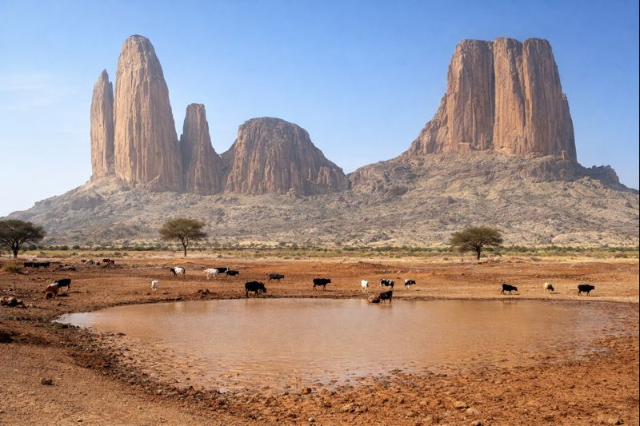

Djenné
14.2k
Mosquée de Djenné
Plus grand édifice en terre au monde

RetourBerceau des grands empires et carrefour des savoirs saheliens
Le Mali est un pays d'une richesse historique et culturelle exceptionnelle. Traversé par le majestueux fleuve Niger, il a été le cœur de puissants empires (Ghana, Mali, Songhaï). Aujourd'hui, ses cités de terre, ses traditions Dogon et sa musique envoûtante continuent de fasciner les voyageurs en quête d'authenticité et de spiritualité.
Découvrez les 15 merveilles du Mali
Plus grand édifice en terre au monde

Mystères et traditions du Pays Dogon

La perle du désert et ses manuscrits

Port fluvial et carrefour des cultures

Oasis de verdure dans la capitale

L'Arche de Kamadjan et les falaises

Capitale de l'ancien royaume bambara
Les "Chutes du Niagara" du Mali

La Main de Fatma, défi des grimpeurs
Témoignage de l'Empire Songhaï

Remparts historiques contre le colon

Peintures rupestres et faune sauvage

L'un des plus beaux musées d'Afrique
La migration des éléphants du désert

Sentinelle du fleuve Sénégal
Terre des Manuscrits et de la Charte du Manden.
Le Mali est le gardien d'une sagesse ancestrale. C'est ici que fut proclamée la Charte du Manden (l'une des premières déclarations des droits de l'homme) au XIIIe siècle. Terre de griots et de musique blues, le Mali vibre au son de la kora et du balafon, portant l'écho des empires disparus.
Un trésor intellectuel inestimable couvrant l'astronomie, le droit et la médecine du Moyen Âge.
La danse des masques et la cosmogonie Dogon, une connexion fascinante entre l'homme et les étoiles.
Du blues d'Ali Farka Touré aux mélodies d'Oumou Sangaré, la musique malienne est l'âme du pays.
L'architecture unique en terre crue (banco), un exemple parfait d'écologie et d'esthétique saharienne.

Emportez l'élégance du Sahel. Des objets chargés de sens créés par les meilleurs artisans maliens (Bogolan, Touareg, Dogon).
 En stock
En stock
Tissu teint avec de la terre et des plantes selon une méthode ancestrale bambara.
 En stock
En stock
Bijoux en argent massif ciselés par les forgerons touaregs du désert.
 Sur commande
Sur commande
Koras, balafons et djembés fabriqués par les maîtres luthiers du Mali.

Quartier du Fleuve, Bamako

Cité administrative, Bamako

ACI 2000, Bamako

Bord du Niger, Mopti

Ségou, Cité coloniale

Face à la Mosquée, Djenné
La cuisine malienne est généreuse et parfumée. Basée sur les céréales locales et les poissons du fleuve Niger, elle offre des plats conviviaux comme le Tigadeguena (sauce arachide).

Onctueuse sauce à la pâte d'arachide servie avec du riz blanc.

Filet de poisson Capitaine du Niger, grillé et épicé.
Spécialité du nord, sauce noire à base de feuilles de corète séchées.
Mélange savoureux de fonio et d'arachide pilée.
Petits pains à la vapeur servis avec une sauce à la tomate et viande.
Beignets de haricots croustillants, le snack favori des maliens.
Pâte de mil ou de maïs servie avec une sauce gombo ou oseille.
Boisson acidulée issue de la liane Saba senegalensis.
Viande d'agneau grillée à la malienne, un régal nocturne.
Bouillie de mil sucrée et onctueuse pour le petit-déjeuner.
Galettes de mil frites, souvent consommées avec du lait caillé.
Boisson piquante et rafraîchissante, très populaire.
Vibrez au rythme des traditions millénaires et de la modernité malienne.
Fête communautaire annuelle de restauration de la mosquée de Djenné.
Célèbre festival de musique et d'art contemporain sur les berges de Ségou.
Rencontre mythique des cultures touarègues au cœur des dunes (Essakane/Tombouctou).
La période idéale pour visiter. Les températures sont clémentes (25-30°C) et le ciel est dégagé. Idéal pour les croisières sur le Niger.
Saison des pluies. Le pays verdit et le fleuve Niger est à son niveau le plus haut, offrant des paysages spectaculaires.
Vérifiez les conseils officiels. Privilégiez le sud et l'axe Bamako-Ségou. Accompagnement local recommandé.
Vaccin Fièvre Jaune obligatoire. Traitement antipaludéen requis. Ne buvez que de l'eau capsulée.
Le Bambara est la langue nationale. Le Français est utilisé pour l'administration.
Prises de type C/E (220V). Prévoyez des batteries solaires pour les excursions en brousse.
Historien des Empires
Oumar est passionné par l'épopée Mandingue et vous guidera sur les traces de Soundiata Keïta.
Guide Culture & Artisanat
Spécialiste du Bogolan et des arts maliens, elle vous fera découvrir les ateliers des meilleurs créateurs.
Expert Pays Dogon
Originaire des falaises, Modibo vous fera comprendre la complexité des rituels et de l'astronomie Dogon.